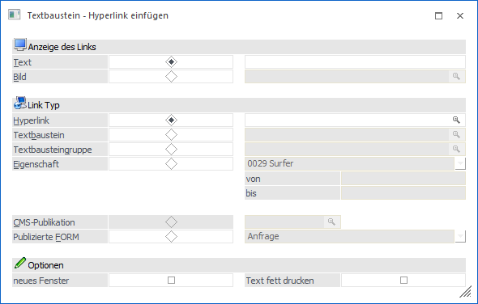
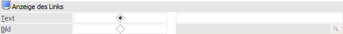
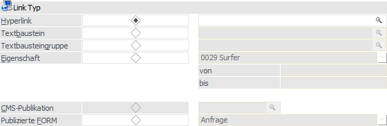
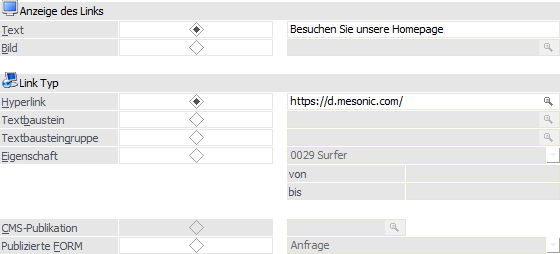
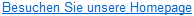
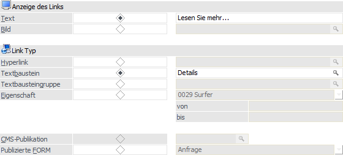
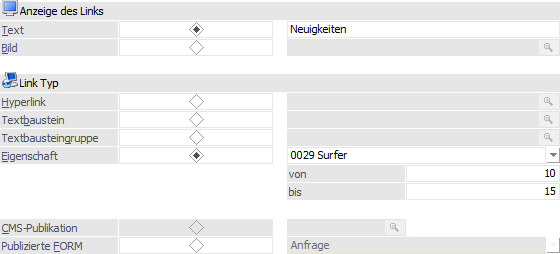
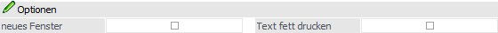

Durch Anklicken des Buttons "Hyperlink" im Fenster Textbausteine kann innerhalb des Textbausteines ein Verweis / Link eingebaut werden.
Hinweis
Die Link Typen "Textbaustein", "Textbausteingruppe", "Eigenschaft" und "CMS-Publikation" können nur in der WebEdition verwendet werden. Der "Hyperlink" findet hingegen auch in z.B. Serienmails Verwendung.

Folgende Einstellungen stehen zum Erstellen bzw. Editieren eines Links zur Verfügung:
Anzeige des Links

Ø Text
Ø Bild
Ein Link kann auch als Grafik dargestellt werden. Dazu gibt es die Möglichkeit in diesem Feld eine Grafik aus der WinLine Datenbank anzugeben.
Hinweis
Die Darstellung als Grafik wird nur in Verbindung mit der WebEdition unterstützt.
Link Typ

In diesem Bereich wird die Art des Links definiert, d.h. was bei Anwahl passieren soll.
Achtung
In den Hyperlinks dürfen in den Texten keine eckigen Klammern [] vorkommen, da diese für den Hyperlink selbst benötigt werden. Wenn eckige Klammern verwendet werden, so wird der Hyperlink nicht korrekt funktionieren!
Ø Hyperlink
Wird diese Variante ausgewählt, dann kann ein direkter Verweis auf z.B. eine Internet-Seite oder auf eine Datei (hier muss allerdings auf den Dateinamen geachtet werden) hinterlegt werden. Der Verweis muss manuell und vollständig eingetragen werden.
Bespiel - Hyperlink
Durch Anklicken des Links "Besuchen Sie unsere Homepage!" wird die Seite www.mesonic.com aufgerufen.

Als Ergebnis wird folgender Eintrag in den Textbaustein übernommen:

Ø Textbaustein
Mit dieser Variante kann auf einen weiteren Textbaustein verwiesen werden. Dabei wird als Parameter eine interne Textbausteinnummer mitgegeben. Durch Drücken der F9-Taste kann nach allen bereits angelegten Textbausteinen gesucht werden.
Beispiel - Textbaustein
Durch Anklicken des Links "Lesen Sie mehr ..." wird der Textbaustein "Details" aufgerufen.

Als Ergebnis wird folgender Eintrag in den Textbaustein übernommen:
Ø Textbausteingruppe
Mit diesem Link Typ kann eine ganze Textbausteingruppe verwiesen werden. Das hat den Vorteil, dass nicht jeder einzelne Textbaustein extra angegeben werden muss.
Ø Eigenschaft
Bei diesem Typ kann eine Liste ausgegeben werden, die auf Basis von Eigenschaften bestimmt wird. Zuerst wird aus der Auswahlliste die Eigenschaft gewählt, auf die eingeschränkt werden soll. In den Feldern "von / bis" können dann die Werte eingegeben werden, auf die geprüft werden soll.
Beispiel - Eigenschaften
Durch Anklicken des Links "Neuigkeiten" wird eine Liste geöffnet, die alle Textbausteine enthält, bei denen die Eigenschaft "Surfer" einen Wert zwischen 10 und 15 hat, wobei die Liste auch nach dem Wert der Eigenschaft sortiert wird.

Als Ergebnis wird folgender Eintrag in den Textbaustein übernommen:
Ø CMS-Publikation
Mit dieser Variante kann auf eine Publikation verwiesen werden, wobei die Publikation aus den verschiedensten Textbausteinen und Textbausteingruppen zusammengesetzt sein kann.
Ø Publizierte FORM
Mit dieser Varianten erzeugt die WinLine einen Link zu einem eindeutigen Datensatz innerhalb einer WinLine FORM, wobei die Darstellung über die FLP (Functional Landingpages) erfolgt. Da es sich um einen personalisierten Link handelt, müssen folgende Voraussetzung erfüllt sein:
ü Die WinLine FORM muss publiziert, d.h. in der MesoCloud gespeichert, worden sein.
ü Der Textbaustein muss im Kontext eines Mailversands verwendet werden, welcher über die CRM-Folgeaktion "73 - Mail mit FORM Objekt" ausgelöst wird (weitere Informationen entnehmen Sie bitte dem Kapitel "Workflow Editor - Definitionsbereich - Folgeaktionen").
Optionen

Ø neues Fenster
Ist diese Option aktiviert, dann wird durch Anklicken des Links ein neues Browser-Fenster geöffnet. Bleibt die Option inaktiv, dann wird die neue Seite im aktuellen Browser dargestellt.
Ø Text fett drucken
Ist diese Option aktiv, dann wird der Text, welcher den Link darstellt, fett gedruckt. Ist die Checkbox inaktiv, dann bleibt der Text in Normalschrift.
Buttons

Ø Ok
Durch Drücken des Buttons "Ok" bzw. der Taste F5 werden die Einstellungen gespeichert und in den Textbaustein übernommen. Als Ergebnis wird ein "Link" angezeigt. Wenn noch Änderungen an diesem Hyperlink vorgenommen werden sollen, so kann das Fenster durch Anklicken des Links wieder geöffnet werden.
Ø Ende
Durch Drücken des Buttons "Ende" bzw. der Taste ESC wird das Fenster geschlossen und alle nicht gespeicherten Eingaben verworfen.